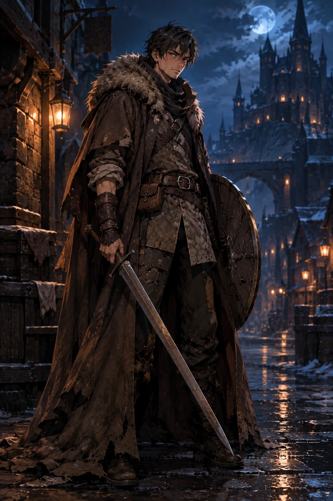

Мечник / танк
Габриель / Габриэла
мечник или мечница · по умолчанию м · прозвище «Проклятый Меч» — про него самого, наёмника, не про клинок (Алексей, 30.09) · свои зовут «Габ»
- Навыки
- мечниктанк
- Кольцо
- → Лучник: западает на эльфа / эльфийку. м+ж, ж+м — романтика; ж+ж — соперничество; м+м — броманс
- Рана
- Наставник Бернар ушёл, оставив меч (Габ думает — в подарок, а в душе — что меч забыт). Бежал под дождём к данжу, услышал крик старика, но не смог войти: не хватило ранга гильдейской руны. Смерти не видел, только догадывается — двойник Бернара в акте III для него шок. Потом погиб его собственный отряд, выжил один. Топит горе, ПТСР.
- Обучение
- Первый уровень Даркгрота с наставником: «Бывал тут с моим наставником».
- Облик
- Профи, а не нищий неудачник: ходил на заказы со своим отрядом, его нанимают и чужие отряды — одиночка, как в манге; дом не нужен, красивые доспехи тоже, лишь бы прочные. Единственный в отряде, кто бывал в подземельях, — знает чудовищ. Большой, светловолосый, лицо открытое и простодушное. Он — мастер клинка, старше своих ~18 лет годами данжей; сильный, могучий — но без цели в жизни. Высокий и крепкий, но плащ Бернара ему велик — тот был ещё крупнее, отсюда «Медведь». Броня простая, добротная — денег хватает. Щит из зачарованного дуба: когда-то выменял у гнома на голову огра. На щите изнутри засечки — по одной за каждого из отряда и одна за Бернара; видит их только он.
- Голос
- Больше Лайос Тоден, чем Дунк. С людьми говорит коротко и неловко — не понимает их, режет правду в лицо, не замечая, что обидел; о чудовищах — взахлёб. Смешной не нарочно, от прямоты: «Со мной обычно умирают другие» — не шутка, а факт. После каждой драки: «Четверо. Все здесь». Ненавидит благодарность, слово «проклятый», звук капающей воды. До акта III голос меча слышит как «в ушах звенит».
- Мелочи
- Спит с мечом, пьёт крепкое — как Бернар. Судит чужих лошадей, с ними ласковее, чем с людьми. Своей нет: последний заказ провален, не заплатили, а на поход влез в долги — лошадь продал, остаток денег в кошельке (его и срежет Нобби). В кошельке — свистулька младшего из отряда. С Нобби химия сама собой: любит бродячих собак, Нобби их презирает.
- Его серия
- Хочет произвести впечатление — выходит боком